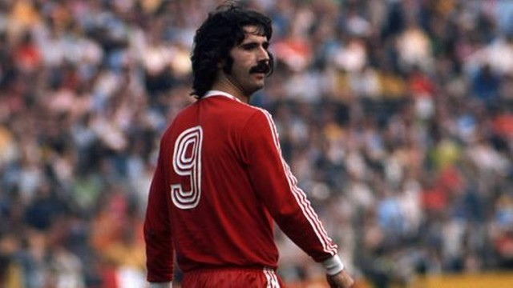

Gerd Muller

Gerhard "Gerd" Müller foi um futebolista alemão que atuou como centroavante. É amplamente considerado o maior
centroavante da história do futebol europeu, e um dos maiores do futebol mundial. Seu diferencial era a sua explosão
e velocidade de movimentos em pequenos espaços e seu chute potente e preciso.
Voltar